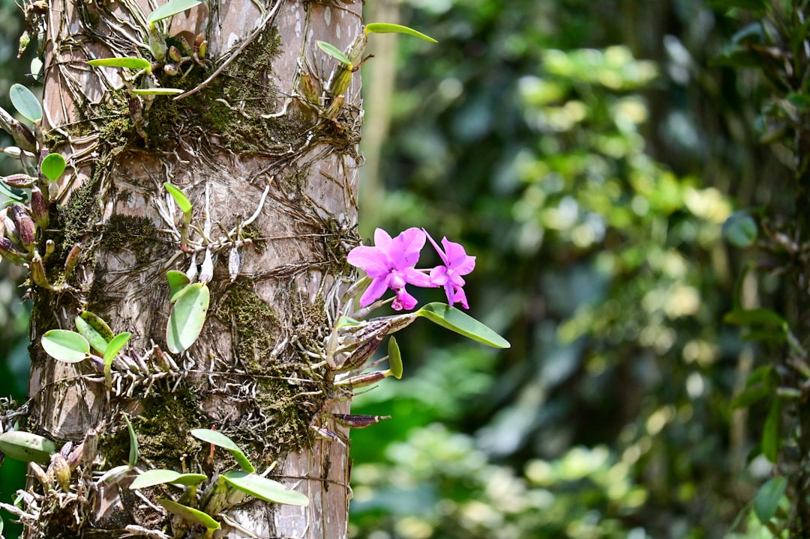
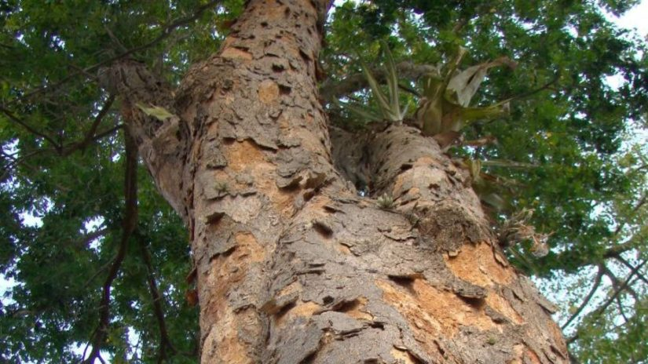

Mata Atlântica:
Um Patrimônio em Risco
Um dos únicos hotspots brasileiros, juntamente com o Cerrado. A Mata Atlântica corre risco de extinção. Venha conhecer a importância desse grande bioma brasileiro e teste seus conhecimentos.
12,4%
da cobertura original ainda existe
20.000
espécies de plantas catalogadas
120 mi
de brasileiros dependem do bioma
17
estados compõem o domínio
22,4%
Quantidade remanescente no estado SP
O que é a Mata Atlântica?
A Mata Atlântica é um bioma de alta complexidade, que se estende ao longo da costa atlântica do
Brasil,
atravessando 17 estados. É reconhecida mundialmente como um hotspot, status dado às
regiões
com rica
diversidade de espécies e mais ameaçadas do planeta Terra.
No estado de São Paulo, o desmatamento começou com a chegada dos portugueses em 1500, atualmente
possui
apenas 22,4% da cobertura original, grande parte da floresta foi destruída para dar lugar à
agropecuária, industrialização e urbanização. Hoje, o bioma é protegido pela Constituição
Federal de
1988 e pela Lei 11.428/2006, a lei da Mata Atlântica.

8.000
espécies endêmicas de plantas
Dimensões da Mata Atlântica

Flora Única no Mundo
Com cerca de 350 espécies de plantas endêmicas, no estado de SP, a Mata Atlântica concentra uma das maiores diversidades vegetais do planeta em um único bioma.
Flora Única no Mundo
Com cerca de 350 espécies de plantas endêmicas, no estado de SP, a Mata Atlântica concentra uma das maiores diversidades vegetais do planeta em um único bioma.
Flora Única no Mundo
Com cerca de 350 espécies de plantas endêmicas, no estado de SP, a Mata Atlântica concentra uma das maiores diversidades vegetais do planeta em um único bioma.
icone
Teste seus conhecimentos
Nosso quiz educativo com 10 perguntas avalia o quanto você sabe sobre o grande bioma da Mata Atlântica, com resultado imediato e explicações.